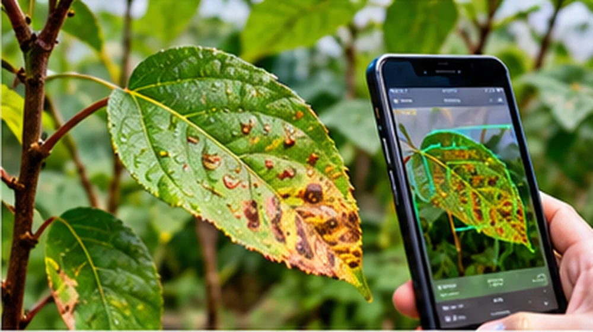

BuiltSmart · Plant Vision
FloraScan
Leaf-condition and botanical-image screening, from disease examples to difficult seasonal colour changes.

Development evidence
Classroom tests included a diseased leaf reported as Frogeye Leaf Spot with six highlighted regions, a healthy hydrangea image and an autumn-colour aspen example. The outputs reflect prototype interpretations, not botanical diagnoses.
The distinctive value is recognizing uncertainty: seasonal colour, image quality and species differences can be mistaken for disease.